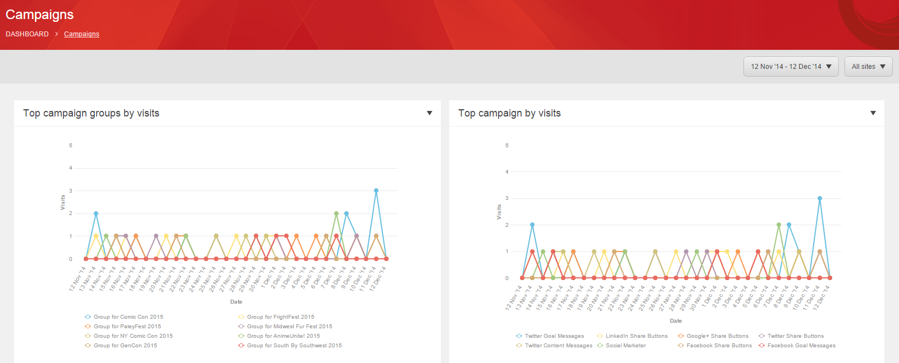
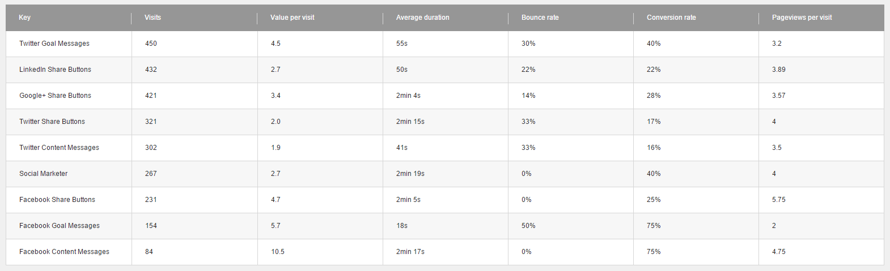
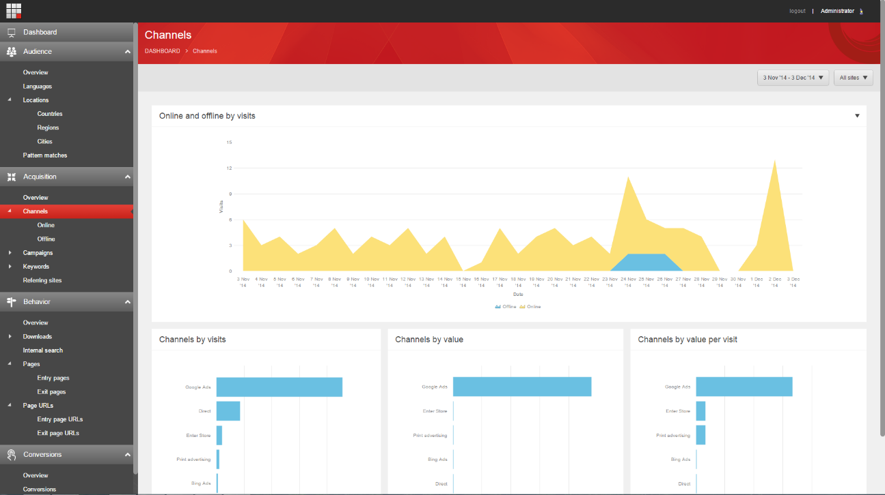
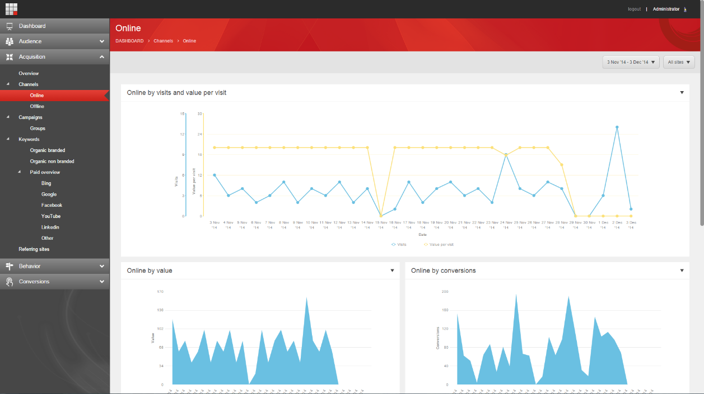

Walkthrough: キャンペーンの効率性を分析¶
Sitecore エクスペリエンス アナリティクスは、マーケターやマーケティングアナリスト向けに、エクスペリエンスデータのパターンや傾向を特定するためのダッシュボードやレポートを提供しています。このデータは、ウェブサイトやその他の外部データソースから収集されます。
キャンペーンクリエーターを使用して、特定のキャンペーンアクティビティを表示、フィルタリング、検索することができます。個々のキャンペーンアクティビティを選択したら、Campaign Creatorのリンクをクリックして、Sitecore エクスペリエンス アナリティクス（xAnalytics）に直接アクセスすることができます。
xAnalyticsは、個々のキャンペーンアクティビティのパフォーマンスに関する情報を提供するダッシュボードとレポートを提供します。そして、そのキャンペーンアクティビティのパフォーマンスを、キャンペーングループ内の他のアクティビティや、ウェブサイト全体のアクティビティと比較することができます。
例えば、マーケターはxAnalyticsを使用して、どのキャンペーンが最も高いコンタクトエンゲージメント価値レベルを提供しているかを調べることができます。このデータを使用してキャンペーンの効率性を分析し、どのキャンペーンが訪問ごとに最も高いエンゲージメントバリューを提供しているかを確認します。また、キャンペーンマネージャーは、チャネル間のキャンペーントラフィックを比較して、どのチャネルがキャンペーンにコンタクトを集めるのに最も効果的であるかを示します。
キャンペーン活動を選択する¶
Campaign Creator を使用して、分析したいキャンペーンアクティビティを見つけます。
スタート画面で、Campaign Creatorを開きます。
すべてのキャンペーン」ページで、「キャンペーン分類フィルター」の下にあるドロップダウンメニューを開き、キャンペーン活動に適用するフィルターを探して選択します。
{kind=link}
[キャンペーンを表示」ボタンをクリックして、フィルタ設定を適用します。フィルターの条件に一致するすべてのキャンペーンは、「検出されたキャンペーン」セクションで見つけることができます。
発見されたキャンペーンセクションで、関連するキャンペーンアクティビティをクリックします。次に、xAnalyticsを開くには、キャンペーンアクティビティパネルの［キャンペーンの実行］で、［エクスペリエンスアナリティクスに移動］をクリックします。
{kind=link}
キャンペーンレポートを見る¶
エクスペリエンス アナリティクス ダッシュボードで、Acquisition タブをクリックし、Campaigns サブタブをクリックします。これにより、キャンペーンレポートが開きます。キャンペーンレポートでは、どのキャンペーンがウェブサイトに最も多くの訪問をもたらしたかを示すチャートやグラフを見ることができます。
また、どのキャンペーンが訪問あたりのエンゲージメントバリューが最も高いかというデータを表示することもできます。
次の例では、Facebook の目標メッセージと Twitter の目標メッセージの方が他のキャンペーンよりも訪問数が多いにもかかわらず、1 訪問あたりのエンゲージメントバリューのレベルは同じようになっています。
{kind=link}
キャンペーン詳細レポート¶
エクスペリエンス アナリティクス ダッシュボードの [Acquisitions] タブの [Campaigns] サブタブで、[Campaigns Detail] レポートを表示できます。これは、キャンペーン概要レポートの下部にあるテーブルリストです。
キャンペーン詳細レポートには、以下の情報が表示されます。
キャンペーン詳細コラム |
コメント |
訪問者数 |
キャンペーンの総訪問数です。 |
1回あたりのバリュー |
キャンペーンの1回あたりの平均エンゲージメント値。 |
平均持続時間 |
コンタクトの平均的な長さは、あなたのウェブサイトに訪問したときの長さです。 |
バウンス率 |
直帰率 |
コンバージョン率 |
キャンペーンの訪問者の目標コンバージョン率。 |
1回の訪問でのページビュー |
コンタクトが訪問した平均ページ数。 |
次の例では、全体的にTwitterゴールメッセージの訪問数が最も多いことがわかります。しかし、FacebookゴールメッセージとFacebookコンテンツメッセージは、全体の訪問数が少ないにもかかわらず、ゴールコンバージョン率が高くなっています。
{kind=link}
チャンネルのレポート¶
エクスペリエンス アナリティクス ダッシュボードの [Acquisitions] タブで [Channels] サブタブをクリックして、[Channels Overview] レポートを表示します。
{kind=link}
チャンネルの概要では、以下のレポートを提供しています。
レポート名 |
コメント |
訪問によるオンライン・オフライン |
あなたのウェブサイトで訪問者があったオンラインとオフラインのインタラクションの合計数。 |
訪問によるチャンネル |
訪問者数別に見ると、オンラインとオフラインのチャネルでトップのパフォーマンスを示しています。 |
バリューごとのチャンネル |
コンタクトエンゲージメントの価値レベルが最も高かったオンラインとオフラインのチャネル。 |
1回の訪問あたりのバリューによるチャネル |
1回の訪問で生成されるコンタクトエンゲージメントの価値によって、最も効果的なオンラインとオフラインのチャネル。 |
この例では、Google Ads が最も高いトラフィックを受けており、1回の訪問あたりのエンゲージメントバリューが最も高いことがわかります。
[チャンネル] サブタブで [オンライン] をクリックすると、オンラインチャンネルからのみ流入するトラフィックに関するオンライン概要レポートが表示されます。
{kind=link}
例えば、「Online by value」と「Online by Conversions」のレポートでは、エンゲージメントバリューとゴールコンバージョン数が日によって変化していることがわかります。
しかし、Online by visitsとOnline by value per visitsのレポートでは、トラフィックレベルの変動にもかかわらず、1回あたりの訪問数のレベルが合理的に一定に保たれていることがわかります。